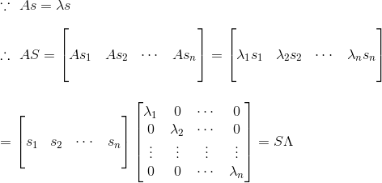
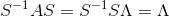

定义
我们首先来看一条公式：

其中Q由n个线性无关的特征向量组成，Λ为λ组合成的对角矩阵。这条公式在图像处理中十分有用，举个例子如图片的压缩(具体步奏以后会讲)。但是要注意的一点是，并不是所有的矩阵都能特征分解，所以其存在局限性，后面会讲SVD(奇异值分解)就更显优势，应用范围也更广，不过都是后话了，这节重点还是特征分解。
公式从何来？
我们先假定有一个n*n的矩阵A，其有n个线性无关的特征向量，将其组合成Q=[q1,q2,……,qn]（注意x为列向量），那么有：

那两边各右乘Q的逆可得：

当然，两边可以各左乘Q的逆，那么可得：

而这种叫做将矩阵A对角化。
另外还有一点需要提醒的是，λ值可以重复，但特征向量一定要有n个线性无关才行。
公式的简单应用
已知A有n个线性无关的特征向量，那么A^100等于多少？

由于Λ是对角矩阵，所以100次幂也很好求：